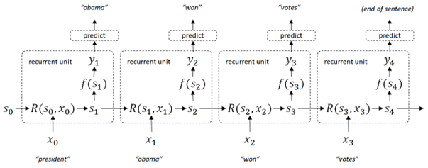
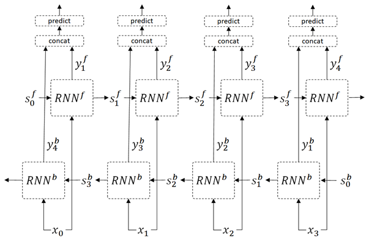
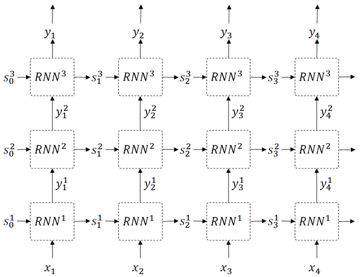
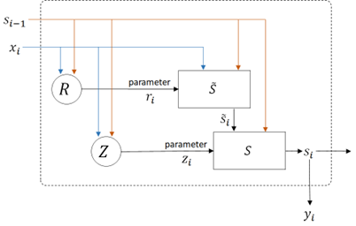
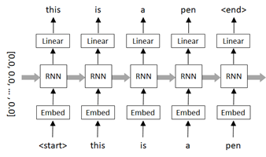
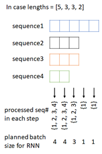

Recurrent Neural Network (RNN)#
RNN-based architectures (such as, LSTM, GRU, etc) were widely used before LLMs came in the picture.
Recall that language model created in previous example won’t care the long past context.
For example, when the following sentence is given,
“In the United States, the president has now been”
it won’t care the context “In the United States” when it refers only the last 5 words.
There might then be inconsistency in the sentence between former part and latter part.
Let me assume another sentence “it’s vulgar and mean, but I liked it.”.
This sentence includes some negative phrases (“vulgar”, “mean”), but the overall sentence has positive sentiment. This example shows that it’s needed for precise predictions to understand not only individual phrases, but also the context in which they occur.
In recurrent architecture, past context (called states) is inherited to the next prediction by the state memory \( s \) (which is trained by input and previous state), and this connection continues in the chain as follows. (See the following diagram.)
👉 In this network, the next state \(s_{i+1}\) is predicted by input \(x_i\) and previous state \(s_i\) in the network \(R\) (which is called a recurrent unit) and this will be connected from beginning to the end of sequence.
👉 The output \(y\) in each recurrent unit is generated by the state \(s\) and the function \(f(\cdot)\). The output \(y\) is then used for prediction in each unit.
Note : In simple RNN and GRU, \( f(\cdot) \) in the following diagram is identity function.
Recurrent Neural Network (RNN) will then be able to represent arbitrary size of sequence.

There are a lot of variants (including today’s state-of-the-art model) in recurrent architecture.
👉 In bidirectional RNN (BiRNN), the states in both directions (forward states and backward states) are maintained and trained as follows.

Imagine that you predict the word [jumped] in the sentence, “the brown fox [xxxxx] over the dog”. In this example, the latter context (“over the dog”) is also important in the prediction.
The bidirectional RNN (BiRNN) is very effective, also in tagging tasks.
👉 In deep RNN (see below), the output is more deeply learned by multi-layered architecture. (See the following picture.)

One of successful architecture in RNN is recurrent gated architecture.
With simple RNN, it will suffer from vanishing gradient problems, with which a lot of layers will rapidly lead the gradients of loss to zeros. (It will then eventually become hard to train the long past context in sequence.)
Briefly saying, gated architecture will avoid this problem by using gate vector \( g \) and new memory \( s^{\prime} \) as follows :
\( s^{\prime} = g \cdot x + (1 - g) \cdot s \)
where \( \cdot \) is inner product operation and \(1\) is vector \((1,1,\ldots,1)\).
This computation will read the entries of input \( x \) which correspond to 1 values in \( g \), and read the entries of state \( s \) which correspond to 0 values in \( g \).
\( g \) is then also controlled and trained by input and previous memory state.
LSTM (Long Short Term Memory) and GRU (Gated Recurrent Unit) are widely used gated architectures in language tasks.
I’ll show you GRU in the following diagram.

where \( \sigma(\cdot) \) is sigmoid activation and \( tanh(\cdot) \) is tanh activation. (See here for sigmoid and tanh operation.)
Note : The bias term is often included, such as \( Z : z_i = \sigma(W_{zx} x_i + W_{zs} s_{i-1} + b_z) \).
In GRU architecture, the new state candidate \( \tilde{s}_i \) is computed by using the controlled parameter \( r_i \). (And \( r_i \) is also trained by inputs.)
The updated final state \( s_i \) is then determined based on the weight between previous state \( s_{i-1} \) and state candidate \( \tilde{s}_i \), by using controlled parameter \( z_i \). (And \( z_i \) is also trained by inputs.)
In this example, we will train 2 language models with simple RNN (Simple Recurrent Neural Network) and GRU (Gated Recurrent Unit) architecture in word’s prediction task.
Install required packages#
!pip install torch==2.3.0 torchtext==0.18.0 --extra-index-url https://download.pytorch.org/whl/cu114
Prepare data#
We will again use short description text in news papers dataset, since it’s formal-styled concise sentence (not including slangs and it’s today’s modern English).
Before starting, please download News_Category_Dataset_v3.json (collected by HuffPost) in Kaggle.
import pandas as pd
df = pd.read_json("News_Category_Dataset_v3.json",lines=True)
train_data = df["short_description"]
train_data
0 Health experts said it is too early to predict...
1 He was subdued by passengers and crew when he ...
2 "Until you have a dog you don't understand wha...
3 "Accidentally put grown-up toothpaste on my to...
4 Amy Cooper accused investment firm Franklin Te...
...
209522 Verizon Wireless and AT&T are already promotin...
209523 Afterward, Azarenka, more effusive with the pr...
209524 Leading up to Super Bowl XLVI, the most talked...
209525 CORRECTION: An earlier version of this story i...
209526 The five-time all-star center tore into his te...
Name: short_description, Length: 209527, dtype: object
To get the better performance (accuracy), we standarize the input text as follows.
Make all words to lowercase in order to reduce words
Make “-” (hyphen) to space
Remove all punctuation except “ ’ “ (e.g, don’t, isn’t) and “&” (e.g, AT&T)
train_data = train_data.str.lower()
train_data = train_data.str.replace("-", " ", regex=True)
train_data = train_data.str.replace(r"[^'\&\w\s]", "", regex=True) # raw string
train_data = train_data.str.strip()
train_data
0 health experts said it is too early to predict...
1 he was subdued by passengers and crew when he ...
2 until you have a dog you don't understand what...
3 accidentally put grown up toothpaste on my tod...
4 amy cooper accused investment firm franklin te...
...
209522 verizon wireless and at&t are already promotin...
209523 afterward azarenka more effusive with the pres...
209524 leading up to super bowl xlvi the most talked ...
209525 correction an earlier version of this story in...
209526 the five time all star center tore into his te...
Name: short_description, Length: 209527, dtype: object
Finally we add <start> and <end> tokens in each sequence as follows, because these are important information for learning the ordered sequence.
this is a pen –> <start> this is a pen <end>
train_data = [" ".join(["<start>", x, "<end>"]) for x in train_data]
# print first row
train_data[0]
'<start> she left her husband he killed their children just another day in america <end>'
Generate sequence inputs#
We will generate the sequence of word’s indices (i.e, tokenize) from text.

First we create a list of vocabulary (vocab).
import torchtext
torchtext.disable_torchtext_deprecation_warning()
from torchtext.data.utils import get_tokenizer
from torchtext.vocab import build_vocab_from_iterator
max_word = 50000
# create tokenizer
tokenizer = get_tokenizer("basic_english")
# define tokenization function
def yield_tokens(train_data):
for text in train_data:
tokens = tokenizer(text)
yield tokens
# build vocabulary list
vocab = build_vocab_from_iterator(
yield_tokens(train_data),
specials=["<unk>"],
max_tokens=max_word,
)
vocab.set_default_index(vocab["<unk>"])
The generated token index is 0, 1, ... , vocab_size - 1.
Now we can set vocab_size (here 50000) as a token id in padded positions.
pad_index = vocab.__len__()
vocab.append_token("<pad>")
Get list for both index-to-word and word-to-index.
itos = vocab.get_itos()
stoi = vocab.get_stoi()
# test
print("The number of token index is {}.".format(vocab.__len__()))
print("The padded index is {}.".format(stoi["<pad>"]))
The number of token index is 50001.
The padded index is 50000.
Now we will build a collator function, which is used for pre-processing in data loader.
👉 In this collator, first we create a list of word’s indices as follows.
<start> this is pen <end> –> [2, 7, 5, 14, 1]
👉 Next we separate into features (x) and labels (y).
In this task, we predict the next word in the sequence, and we then create the following features (x) and labels (y) in each row.
before :
[2, 7, 5, 14, 1]
after :
x : [2, 7, 5, 14, 1]
y : [7, 5, 14, 1, -100]
Note : Here we have set -100 as an unknown label id, because PyTorch cross-entropy function torch.nn.functional.cross_entropy() has a property
ignore_indexwhich default value is -100.
👉 Finally we pad the inputs as follows.
The padded index in features is pad_index and the padded index in label is -100. (See above note.)
x : [2, 7, 5, 14, 1, N, ... , N]
y : [7, 5, 14, 1, -100, -100, ... , -100]
import torch
from torch.utils.data import DataLoader
max_seq_len = 256
device = torch.device("cuda" if torch.cuda.is_available() else "cpu")
def collate_batch(batch):
label_list, feature_list = [], []
for text in batch:
# tokenize to a list of word's indices
tokens = vocab(tokenizer(text))
# separate into features and labels
y = tokens[1:]
y.append(-100)
x = tokens
# limit length to max_seq_len
y = y[:max_seq_len]
x = x[:max_seq_len]
# pad features and labels
y += [-100] * (max_seq_len - len(y))
x += [pad_index] * (max_seq_len - len(x))
# add to list
label_list.append(y)
feature_list.append(x)
# convert to tensor
label_list = torch.tensor(label_list, dtype=torch.int64).to(device)
feature_list = torch.tensor(feature_list, dtype=torch.int64).to(device)
return label_list, feature_list
dataloader = DataLoader(
train_data,
batch_size=16,
shuffle=True,
collate_fn=collate_batch
)
# test
for labels, features in dataloader:
break
print("label shape in batch : {}".format(labels.size()))
print("feature shape in batch : {}".format(features.size()))
print("***** label sample *****")
print(labels[0])
print("***** features sample *****")
print(features[0])
label shape in batch : torch.Size([16, 256])
feature shape in batch : torch.Size([16, 256])
***** label sample *****
tensor([1243, 856, 384, 300, 12, 2846, 15, 72, 109, 47, 1536, 15,
4714, 6, 10, 5470, 1684, 0, -100, -100, -100, -100, -100, -100,
-100, -100, -100, -100, -100, -100, -100, -100, -100, -100, -100, -100,
-100, -100, -100, -100, -100, -100, -100, -100, -100, -100, -100, -100,
-100, -100, -100, -100, -100, -100, -100, -100, -100, -100, -100, -100,
-100, -100, -100, -100, -100, -100, -100, -100, -100, -100, -100, -100,
-100, -100, -100, -100, -100, -100, -100, -100, -100, -100, -100, -100,
-100, -100, -100, -100, -100, -100, -100, -100, -100, -100, -100, -100,
-100, -100, -100, -100, -100, -100, -100, -100, -100, -100, -100, -100,
-100, -100, -100, -100, -100, -100, -100, -100, -100, -100, -100, -100,
-100, -100, -100, -100, -100, -100, -100, -100, -100, -100, -100, -100,
-100, -100, -100, -100, -100, -100, -100, -100, -100, -100, -100, -100,
-100, -100, -100, -100, -100, -100, -100, -100, -100, -100, -100, -100,
-100, -100, -100, -100, -100, -100, -100, -100, -100, -100, -100, -100,
-100, -100, -100, -100, -100, -100, -100, -100, -100, -100, -100, -100,
-100, -100, -100, -100, -100, -100, -100, -100, -100, -100, -100, -100,
-100, -100, -100, -100, -100, -100, -100, -100, -100, -100, -100, -100,
-100, -100, -100, -100, -100, -100, -100, -100, -100, -100, -100, -100,
-100, -100, -100, -100, -100, -100, -100, -100, -100, -100, -100, -100,
-100, -100, -100, -100, -100, -100, -100, -100, -100, -100, -100, -100,
-100, -100, -100, -100, -100, -100, -100, -100, -100, -100, -100, -100,
-100, -100, -100, -100])
***** features sample *****
tensor([ 1, 1243, 856, 384, 300, 12, 2846, 15, 72, 109,
47, 1536, 15, 4714, 6, 10, 5470, 1684, 0, 50000,
50000, 50000, 50000, 50000, 50000, 50000, 50000, 50000, 50000, 50000,
50000, 50000, 50000, 50000, 50000, 50000, 50000, 50000, 50000, 50000,
50000, 50000, 50000, 50000, 50000, 50000, 50000, 50000, 50000, 50000,
50000, 50000, 50000, 50000, 50000, 50000, 50000, 50000, 50000, 50000,
50000, 50000, 50000, 50000, 50000, 50000, 50000, 50000, 50000, 50000,
50000, 50000, 50000, 50000, 50000, 50000, 50000, 50000, 50000, 50000,
50000, 50000, 50000, 50000, 50000, 50000, 50000, 50000, 50000, 50000,
50000, 50000, 50000, 50000, 50000, 50000, 50000, 50000, 50000, 50000,
50000, 50000, 50000, 50000, 50000, 50000, 50000, 50000, 50000, 50000,
50000, 50000, 50000, 50000, 50000, 50000, 50000, 50000, 50000, 50000,
50000, 50000, 50000, 50000, 50000, 50000, 50000, 50000, 50000, 50000,
50000, 50000, 50000, 50000, 50000, 50000, 50000, 50000, 50000, 50000,
50000, 50000, 50000, 50000, 50000, 50000, 50000, 50000, 50000, 50000,
50000, 50000, 50000, 50000, 50000, 50000, 50000, 50000, 50000, 50000,
50000, 50000, 50000, 50000, 50000, 50000, 50000, 50000, 50000, 50000,
50000, 50000, 50000, 50000, 50000, 50000, 50000, 50000, 50000, 50000,
50000, 50000, 50000, 50000, 50000, 50000, 50000, 50000, 50000, 50000,
50000, 50000, 50000, 50000, 50000, 50000, 50000, 50000, 50000, 50000,
50000, 50000, 50000, 50000, 50000, 50000, 50000, 50000, 50000, 50000,
50000, 50000, 50000, 50000, 50000, 50000, 50000, 50000, 50000, 50000,
50000, 50000, 50000, 50000, 50000, 50000, 50000, 50000, 50000, 50000,
50000, 50000, 50000, 50000, 50000, 50000, 50000, 50000, 50000, 50000,
50000, 50000, 50000, 50000, 50000, 50000, 50000, 50000, 50000, 50000,
50000, 50000, 50000, 50000, 50000, 50000])
Build network#
Now we build a model for this next word’s prediction using simple RNN architecture.

In PyTorch, you can use torch.nn.RNN module for processing simple RNN, and we also use this built-in module in this example.
In the following example, the shape of RNN input is expected to be (batch_size, sequence_length, input_dimension).
However, to tell which time steps in each sequence should be processed in RNN (i.e, for RNN masking), we wrap this tensor as a packed sequence with torch.nn.utils.rnn.pack_padded_sequence() before passing into RNN module.
For example, when batch size is 4 and we generate a packed sequence with lengths=[5, 3, 3, 2] in torch.nn.utils.rnn.pack_padded_sequence(), the processed sequence# in each time-step will then be :
time-step 1 : {1, 2, 3, 4}
time-step 2 : {1, 2, 3, 4}
time-step 3 : {1, 2, 3}
time-step 4 : {1}
time-step 5 : {1}
As a result, it’s processed with new batch size [4, 4, 3, 1, 1]. (See below picture.)

Note: When the length is not sorted, first all sequences in batch are sorted by descending length of sequence, and planned to run batches to meet each time-steps. (When it’s unpacked, the order is returned to the original position.)
import torch
import torch.nn as nn
embedding_dim = 64
rnn_units = 512
class SimpleRnnModel(nn.Module):
def __init__(self, vocab_size, seq_len, embedding_dim, rnn_units, padding_idx):
super().__init__()
self.seq_len = seq_len
self.padding_idx = padding_idx
self.embedding = nn.Embedding(
vocab_size,
embedding_dim,
padding_idx=padding_idx,
)
self.rnn = nn.RNN(
input_size=embedding_dim,
hidden_size=rnn_units,
num_layers=1,
batch_first=True,
)
self.classify = nn.Linear(rnn_units, vocab_size)
def forward(self, inputs, states=None, return_final_state=False):
# embedding
# --> (batch_size, seq_len, embedding_dim)
outs = self.embedding(inputs)
# build "lengths" property to pack inputs (see above)
lengths = (inputs != self.padding_idx).int().sum(dim=1, keepdim=False)
# pack inputs for RNN
packed_inputs = torch.nn.utils.rnn.pack_padded_sequence(
outs,
lengths.cpu(),
batch_first=True,
enforce_sorted=False,
)
# apply RNN
if states is None:
packed_outs, final_state = self.rnn(packed_inputs)
else:
packed_outs, final_state = self.rnn(packed_inputs, states)
# unpack results
# --> (batch_size, seq_len, rnn_units)
outs, _ = torch.nn.utils.rnn.pad_packed_sequence(
packed_outs,
batch_first=True,
padding_value=0.0,
total_length=self.seq_len,
)
# apply feed-forward to classify
# --> (batch_size, seq_len, vocab_size)
logits = self.classify(outs)
# return results
if return_final_state:
return logits, final_state # This is used in prediction
else:
return logits # This is used in training
model = SimpleRnnModel(
vocab_size=vocab.__len__(),
seq_len=max_seq_len,
embedding_dim=embedding_dim,
rnn_units=rnn_units,
padding_idx=pad_index).to(device)
Train#
Now run training with above model.
As I have mentioned above, the loss on label id=-100 is ignored in cross_entropy() function. The padded position and the end of sequence will then be ignored in optimization.
Note : Because the default value of
ignore_indexproperty incross_entropy()function is -100. (You can change this default value.)
from torch.nn import functional as F
num_epochs = 5
optimizer = torch.optim.AdamW(model.parameters(), lr=0.001)
for epoch in range(num_epochs):
for labels, seqs in dataloader:
# optimize
optimizer.zero_grad()
logits = model(seqs)
loss = F.cross_entropy(logits.transpose(1,2), labels)
loss.backward()
optimizer.step()
# calculate accuracy
pred_labels = logits.argmax(dim=2)
num_correct = (pred_labels == labels).float().sum()
num_total = (labels != -100).float().sum()
accuracy = num_correct / num_total
print("Epoch {} - loss: {:2.4f} - accuracy: {:2.4f}".format(epoch+1, loss.item(), accuracy), end="\r")
print("")
Epoch 1 - loss: 5.9431 - accuracy: 0.11630
Epoch 2 - loss: 6.4704 - accuracy: 0.1789
Epoch 3 - loss: 6.2977 - accuracy: 0.0833
Epoch 4 - loss: 5.6396 - accuracy: 0.1762
Epoch 5 - loss: 5.4232 - accuracy: 0.1679
Generate Text (Simple RNN)#
Here I simply generate several text with trained model.
The metrics to evaluate text generation task is not so easy. (Because simply checking an exact match to a reference text is not optimal.)
Use some common metrics available in these cases, such as, BLEU or ROUGE.
end_index = stoi["<end>"]
max_output = 128
def pred_output(text):
generated_text = "<start> " + text
_, inputs = collate_batch([generated_text])
mask = (inputs != pad_index).int()
last_idx = mask[0].sum() - 1
final_states = None
outputs, final_states = model(inputs, final_states, return_final_state=True)
pred_index = outputs[0][last_idx].argmax()
for loop in range(max_output):
generated_text += " "
next_word = itos[pred_index]
generated_text += next_word
if pred_index.item() == end_index:
break
_, inputs = collate_batch([next_word])
outputs, final_states = model(inputs, final_states, return_final_state=True)
pred_index = outputs[0][0].argmax()
return generated_text
print(pred_output("prime"))
print(pred_output("chairman"))
print(pred_output("he was expected"))
<start> prime minister theresa <unk> said the <unk> was a hero in the world of the arctic monkeys <end>
<start> chairman of the <unk> ' s widow ' s chief of staff reince priebus said the former chief of staff reince priebus said he ' s advocating to be a source of the past <end>
<start> he was expected to be a politician <end>
Train with GRU#
Next we train the same task with gated architecture, GRU (gated recurrent unit).
GRU layer has following architecture.
In this example, we use built-in layer torch.nn.GRU in PyTorch.
Note : In the following example, we use bias term in GRU layer.
embedding_dim = 64
rnn_units = 512
class GruModel(nn.Module):
def __init__(self, vocab_size, seq_len, embedding_dim, rnn_units, padding_idx):
super().__init__()
self.seq_len = seq_len
self.padding_idx = padding_idx
self.embedding = nn.Embedding(
vocab_size,
embedding_dim,
padding_idx=padding_idx,
)
self.rnn = nn.GRU(
input_size=embedding_dim,
hidden_size=rnn_units,
num_layers=1,
batch_first=True,
)
self.classify = nn.Linear(rnn_units, vocab_size)
def forward(self, inputs, states=None, return_final_state=False):
# embedding
# --> (batch_size, seq_len, embedding_dim)
outs = self.embedding(inputs)
# build "lengths" property to pack inputs (see above)
lengths = (inputs != self.padding_idx).int().sum(dim=1, keepdim=False)
# pack inputs for RNN
packed_inputs = torch.nn.utils.rnn.pack_padded_sequence(
outs,
lengths.cpu(),
batch_first=True,
enforce_sorted=False,
)
# apply RNN
if states is None:
packed_outs, final_state = self.rnn(packed_inputs)
else:
packed_outs, final_state = self.rnn(packed_inputs, states)
# unpack results
# --> (batch_size, seq_len, rnn_units)
outs, _ = torch.nn.utils.rnn.pad_packed_sequence(
packed_outs,
batch_first=True,
padding_value=0.0,
total_length=self.seq_len,
)
# apply feed-forward to classify
# --> (batch_size, seq_len, vocab_size)
logits = self.classify(outs)
# return results
if return_final_state:
return logits, final_state # This is used in prediction
else:
return logits # This is used in training
model = GruModel(
vocab_size=vocab.__len__(),
seq_len=max_seq_len,
embedding_dim=embedding_dim,
rnn_units=rnn_units,
padding_idx=pad_index).to(device)
num_epochs = 5
optimizer = torch.optim.AdamW(model.parameters(), lr=0.001)
for epoch in range(num_epochs):
for labels, seqs in dataloader:
# optimize
optimizer.zero_grad()
logits = model(seqs)
loss = F.cross_entropy(logits.transpose(1,2), labels)
loss.backward()
optimizer.step()
# calculate accuracy
pred_labels = logits.argmax(dim=2)
num_correct = (pred_labels == labels).float().sum()
num_total = (labels != -100).float().sum()
accuracy = num_correct / num_total
print("Epoch {} - loss: {:2.4f} - accuracy: {:2.4f}".format(epoch+1, loss.item(), accuracy), end="\r")
print("")
Epoch 1 - loss: 5.7050 - accuracy: 0.16552
Epoch 2 - loss: 5.4469 - accuracy: 0.1743
Epoch 3 - loss: 3.1864 - accuracy: 0.4911
Epoch 4 - loss: 5.4429 - accuracy: 0.1346
Epoch 5 - loss: 5.3104 - accuracy: 0.2817
Generate Text (GRU)#
Here I simply generate several text with trained model.
The metrics to evaluate text generation task is not so easy. (Because simply checking an exact match to a reference text is not optimal.)
Use some common metrics available in these cases, such as, BLEU or ROUGE.
Note : Here I use greedy search and this will sometimes lead to wrong sequence. For drawbacks and solutions, see note in this example.
end_index = stoi["<end>"]
max_output = 128
def pred_output(text):
generated_text = "<start> " + text
_, inputs = collate_batch([generated_text])
mask = (inputs != pad_index).int()
last_idx = mask[0].sum() - 1
final_states = None
outputs, final_states = model(inputs, final_states, return_final_state=True)
pred_index = outputs[0][last_idx].argmax()
for loop in range(max_output):
generated_text += " "
next_word = itos[pred_index]
generated_text += next_word
if pred_index.item() == end_index:
break
_, inputs = collate_batch([next_word])
outputs, final_states = model(inputs, final_states, return_final_state=True)
pred_index = outputs[0][0].argmax()
return generated_text
print(pred_output("prime"))
print(pred_output("chairman"))
print(pred_output("he was expected"))
<start> prime minister justin trudeau is a big part of the game of the republican party <end>
<start> chairman of the house appropriations committee on the verge of the supreme court nominee <end>
<start> he was expected to be a little girl <end>